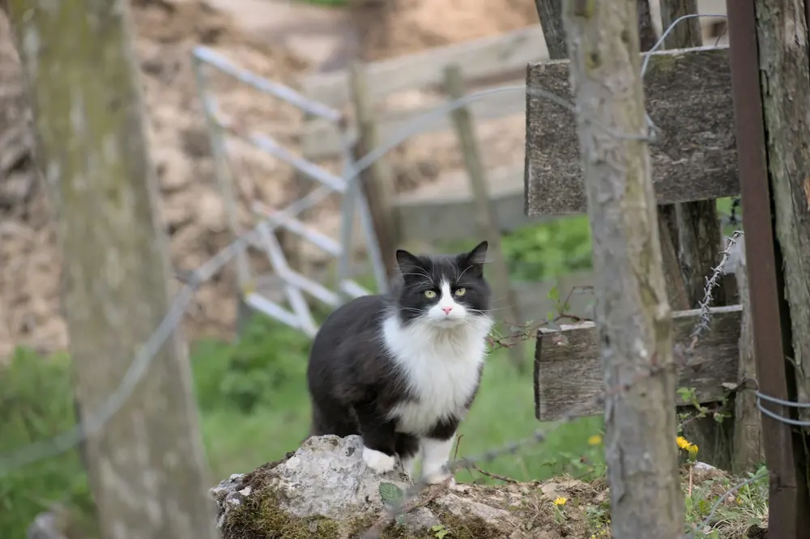
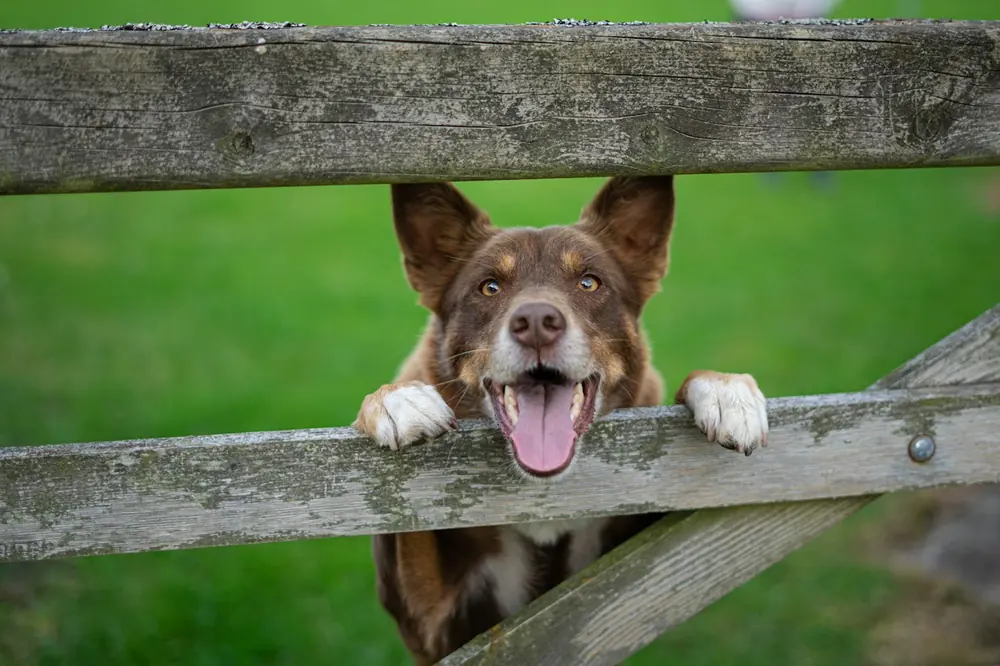
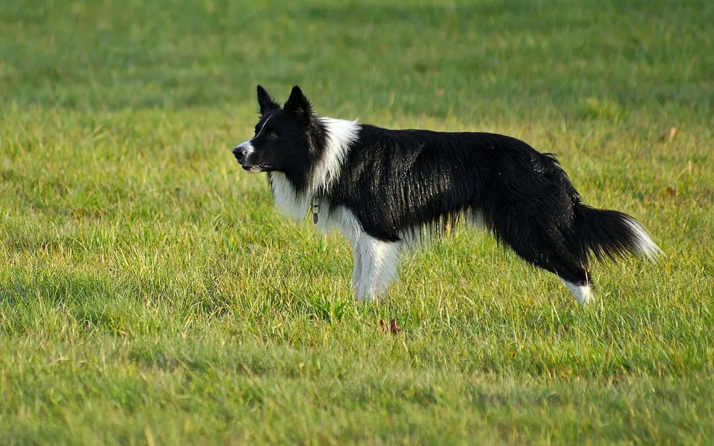
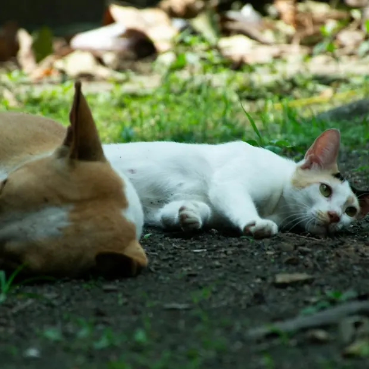

Cats
A quiet start
New cats arrive at the centre's separate quarantine building. Ask us about cats and kittens looking for homes.
Ask about cats08Adopt
Thinking about adopting from the centre? Start with a phone call. The volunteers will tell you which animals are looking for homes and how it works.
08.1How to start
There is no form on this website. Adoption starts with a conversation.
Ring 03 308 4432 and say you are thinking about adopting a cat or a dog.
It helps to know about your home and the kind of animal you are hoping for, so the volunteers can point you the right way.
Which animals are looking for homes, what adoption involves, any costs, and what happens after an animal goes home with you. We do not list fees or rules here: the team will explain how it works at the centre today.
The centre is run by volunteers, so please call before visiting and we will find a time.

08.2Cats and dogs
Animals come and go, so this website does not list them. Ring and the volunteers will tell you who is looking for a home right now.

A quiet start
New cats arrive at the centre's separate quarantine building. Ask us about cats and kittens looking for homes.
Ask about cats
Room to run
Thinking about a dog? Ask us about dogs looking for homes, and what each one needs.
Ask about dogsThe animals in the photographs on this site are illustrative. They are not animals at the centre.

08.3Fostering
If you could give an animal a temporary home, get in touch and ask whether the centre needs foster homes at the moment, and what fostering would involve.
Ring the centre in case it has been brought in. For a lost dog, also contact Ashburton District Council, which runs animal control in the district: see the council's lost and found dogs page.